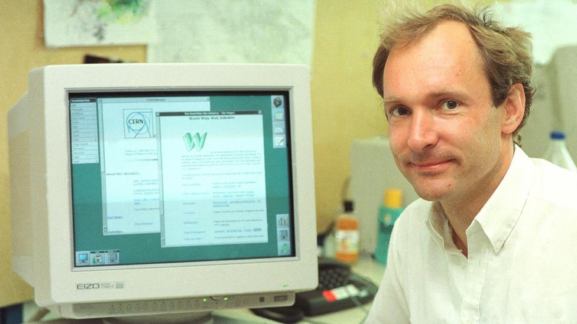

📡 Historia del Internet - Línea de Tiempo |
| 🏠 Inicio | ← Anterior: 1984 | Siguiente: 1991 → |
1989 - World Wide Web (WWW)La Invención que Cambió el Mundo
 Tim Berners-Lee - El padre de la World Wide Web ¿Qué es la World Wide Web?La World Wide Web (WWW o simplemente "la Web") es un sistema de información que permite acceder a documentos y recursos a través de Internet mediante hipervínculos. No es lo mismo que Internet (que es la infraestructura de redes), sino una aplicación que funciona sobre Internet.
El Creador: Tim Berners-LeeSir Tim Berners-Lee, un científico británico, inventó la World Wide Web en 1989 mientras trabajaba en el CERN (Organización Europea para la Investigación Nuclear) en Suiza. Su objetivo era crear un sistema para que los científicos pudieran compartir información fácilmente. Datos sobre Tim Berners-Lee:
La Propuesta OriginalEn marzo de 1989, Tim Berners-Lee presentó un documento titulado "Information Management: A Proposal" a su jefe en el CERN. Inicialmente, su jefe escribió en el documento: "Vago, pero interesante". Sin embargo, le dio permiso para continuar trabajando en la idea.
Las Tres Tecnologías FundamentalesTim Berners-Lee inventó tres tecnologías que siguen siendo la base de la Web moderna:
HTML - El Lenguaje de las Páginas WebHTML es el lenguaje que se usa para crear páginas web. Utiliza etiquetas para dar estructura y formato al contenido. Ejemplo Simple de HTML:
Los Hipervínculos: La Magia de la WebLa característica más revolucionaria de la WWW fueron los hipervínculos (o hiperenlaces). Permiten saltar de una página a otra con un simple clic, creando una "telaraña" de información interconectada. ¿Cómo Funcionan los Hipervínculos?
Ejemplo: El Primer Navegador WebTim Berners-Lee también creó el primer navegador web en 1990, llamado simplemente "WorldWideWeb" (más tarde renombrado a "Nexus" para evitar confusión). Este navegador también funcionaba como editor, permitiendo crear y modificar páginas web.
Una Decisión RevolucionariaEn 1993, el CERN tomó una decisión histórica: hizo que la tecnología WWW fuera de dominio público, es decir, libre y gratuita para todos. Tim Berners-Lee insistió en que no debía haber patentes ni regalías. Esta decisión permitió que la Web se expandiera por todo el mundo.
Impacto y CrecimientoLa World Wide Web transformó Internet de una herramienta para expertos en computación a algo accesible para todos. Facilitó la creación de contenido, el comercio electrónico, las redes sociales y prácticamente toda la actividad en línea que conocemos hoy. Crecimiento de la Web:
El Legado de Tim Berners-LeeTim Berners-Lee continúa trabajando para mejorar la Web. Fundó el W3C (World Wide Web Consortium) en 1994 para desarrollar estándares web. Hoy en día, aboga por una web abierta, neutral y descentralizada. Reconocimientos:
📚 Enlaces RelacionadosPara más información sobre la WWW, consulta:
|
| © 2026 - Historia del Internet | Evento: World Wide Web 1989 |